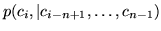
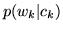
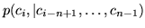
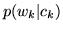

As described in section 14.1.3, a class-base language
model consists of two separate components. The first is an  -gram
which models the sequence of classes (i.e.
) and the second is a class map with associated word
counts or probabilities within classes allowing the word-given-class
probability bigram
 to be evaluated. These files may
then either be linked into a single composite file or a third `linking'
file is create to point to these two separate files - both of these
operations can be performed using the LLINK tool.
-gram
which models the sequence of classes (i.e.
) and the second is a class map with associated word
counts or probabilities within classes allowing the word-given-class
probability bigram
 to be evaluated. These files may
then either be linked into a single composite file or a third `linking'
file is create to point to these two separate files - both of these
operations can be performed using the LLINK tool.
Given a set of word classes defined in a class map file and a set of
word level gram files, building a class-based model with the HTK tools requires only a few simple modifications to the basic procedure
described above for building a word  -gram:
-gram:
The next chapter provides a more thorough introduction to the tools as well as a tutorial to work through explaining how to use them in practice.